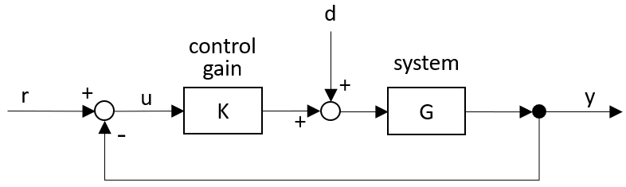

This chapter offers a brief introduction to closed loop control theory, since it is at the heart of all stability problems in both impedance controlled and admittance controlled haptics. Readers already familiar with control theory can skip this chapter.
Haptic devices react to the user's inputs, and the user responds to the device's outputs. This makes the device a closed loop control system, which means there is feedback going round between output and input.
Figure 6.1 gives the block diagram for a basic closed loop control system. It has a block K which is the "controller", and a block G which is the system to be controlled. For the moment we will assume that K is just a multiplication factor, or "gain". The block G usually has all sorts of dynamics. The signal r is an outside reference. This is the moving setpoint which we wish the output y of the system to follow.

If we do not close the feedback loop, then input u to the block K will be the same as the external reference r. The "open loop" output will be :